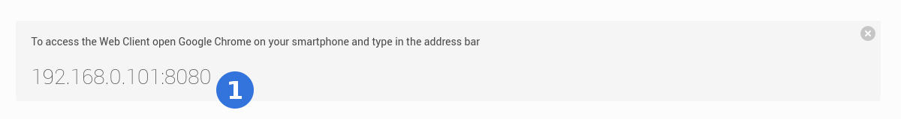
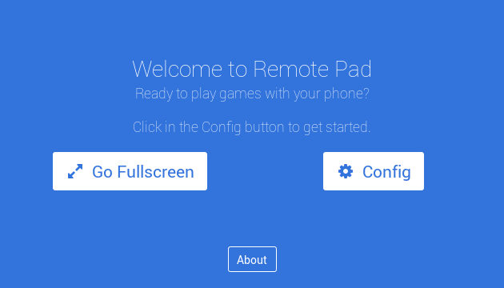
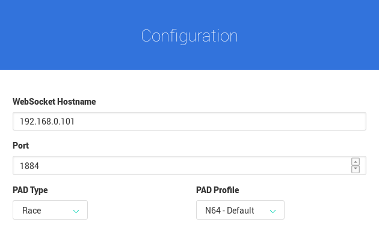
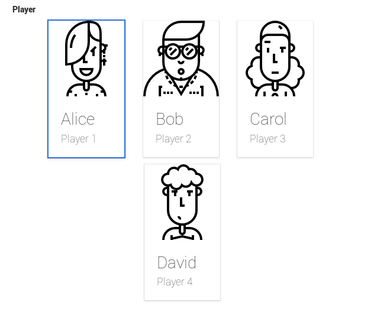
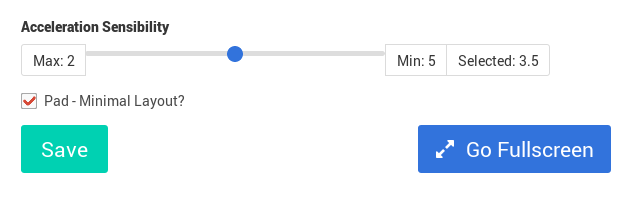

Web Server
Is the main interface between the app and you. Is responsible for the web page where you, the user, will interact. To access you need to open Chrome 55+ for Android or iOS and enter the IP Address and Port indicated by Remote Pad GUI.
For example:

(1) is indicating that you should open the Chrome 55+ and type in the address bar 192.168.0.101:8080. This address could be different, it depends on your network configuration.
After load you should see this page:

Go Fullscreen button only works in Android.
Config Screen
Click on the Config button to open the Config Screen.

This screen comes with preconfigured values.
Scroll down to choose your player.

Hit Save button.

Race Pad
If you choose PAD Type Race you will see the following screen.

Above an image explaing all funcionality.

(1) is the Left L indication. This is not a button but an indication that turns red when you incline your phone. Same for Right R on the other side.
(2) is the Connection status as well your Player. It shows C for Connected and D for Disconnected.
(3) the A button. For the Race Pad you have 4 action buttons: A, B, Y and X. Usually you will just need B for acceleration and A for special items.
(4) the On/Off button. When is Off it stops send commands.
(5) the Config button. You may return to configuration for different setup.